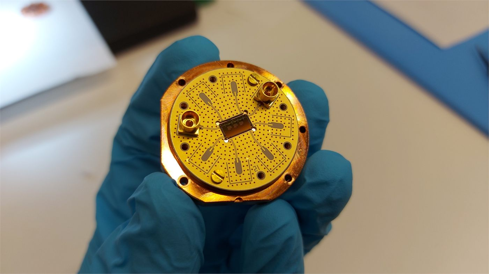

Research hardware
Cleanroom processes, packaging, optics and characterization for experimental quantum systems.
Portfolio
Quantum hardware, microfabrication and hands-on prototyping.
I work on precise experimental systems, from superconducting circuits and acousto-optic hardware to autonomous platforms and product prototypes. This site brings together the projects, research experience and resume highlights that best show how I build.

About
My background sits at the intersection of microengineering and quantum science, with a strong interest in fabrication, optics and experimental hardware. I enjoy projects where physical constraints matter and where design choices have to survive contact with the lab, workshop or test track.
The work collected here ranges from superconducting resonators and trapped-ion optics to autonomous prototypes and mechanical product design. Across all of it, the common thread is building reliable systems with careful attention to detail, manufacturability and performance.
Cleanroom processes, packaging, optics and characterization for experimental quantum systems.
Mechanical design and hardware integration for complete prototypes, from bench setups to mobile platforms.
Comfortable moving between CAD, fabrication, debugging and documentation to get a design working end to end.
Resume
For the full document, open the PDF. The snapshot below is meant to make the main story readable at a glance.
Semester project on superconducting resonators, focused on fabrication flow, packaging and cryogenic characterization.
Research internship prototyping a compact double-pass acousto-optic modulation board for trapped-ion quantum computing.
Driverless hardware work spanning RC test benches, sensor integration and full-scale vehicle constraints.
EPFL, with a focus on microfabrication and quantum technologies.
TU Delft, broadening the engineering base through an international study year.
EPFL, building the core in mechanics, electronics, fabrication and physical systems.
Careful design, practical execution, and a preference for testing ideas in the real setup as early as possible.
Selected projects
Each thumbnail opens a focused case-study page with the project background, what I built, and the main outcomes.

Semester research project on superconducting resonators, from cleanroom flow to dilution-fridge measurements.
View project ->
Compact double-pass acousto-optic hardware designed to save optical-table space without sacrificing flexibility.
View project ->
Hardware work for autonomous driving, spanning an RC validation platform and full-scale race-car integration.
View project ->
Team project taking a product concept through planning, design and fabrication of a working prototype.
View project ->Contact
This public version keeps the contact section simple: email, LinkedIn, and the full resume in PDF form.
Best for direct contact.
matteo.cirillo@epfl.chAlso available here.
matteo.c@bluewin.chProfile and background.
linkedin.com/in/matteo-cirillo-25a835237Complete CV with dates and details.
Open the resume